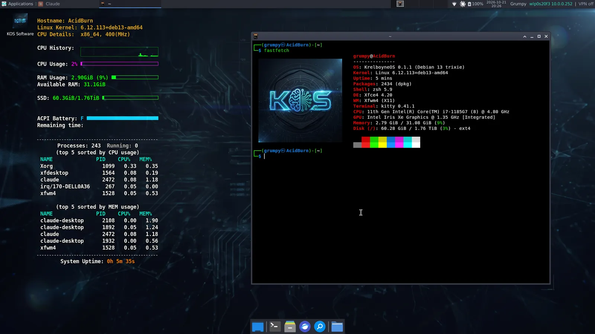
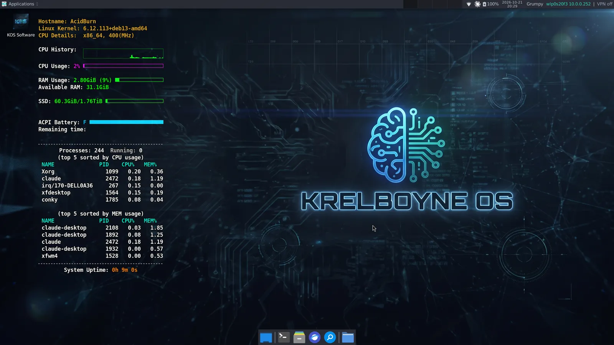
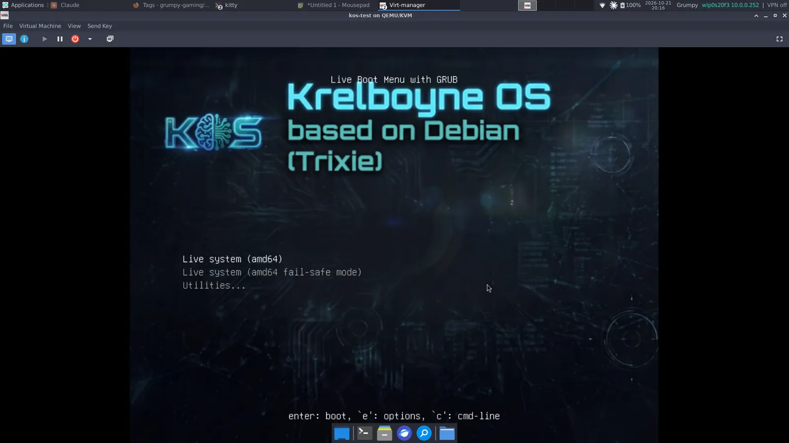
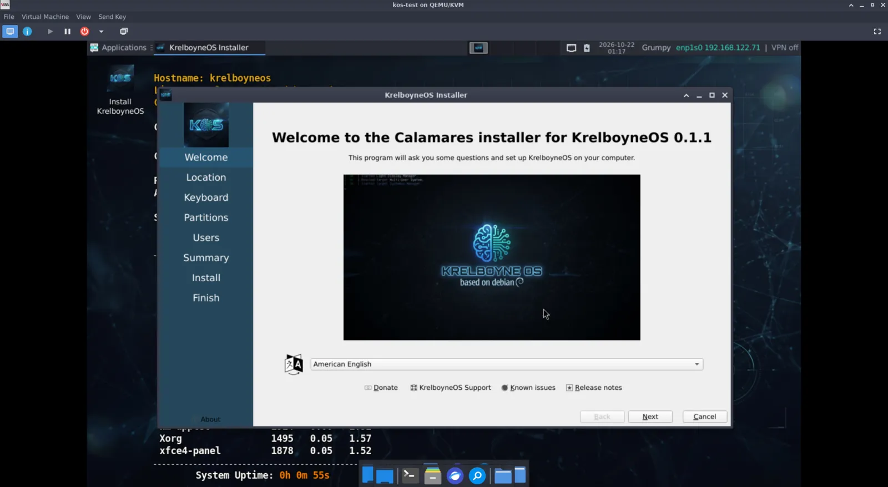
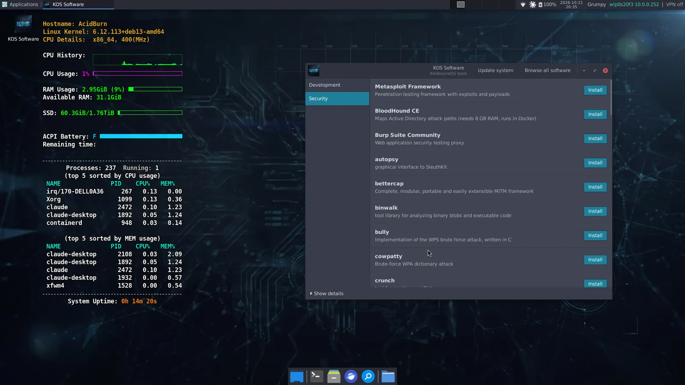

What it is
KrelboyneOS is a custom Linux ISO built with live-build. Boot it to try it, or install it to disk with the Calamares installer.
It started as a Linux From Scratch idea and became a Debian-based distro, so the focus is a useful daily workstation rather than a science project.
0.1.4 alpha. It boots and installs in a virtual machine, including with full-disk encryption, and runs installed on a Dell Latitude 7420.
Testing on more hardware is still ahead, so expect rough edges. Problems are welcome in the Discord.
What's inside
The base image ships the everyday tools. Roughly 70 more optional tools install on demand from the KOS Software app in the System menu, which also updates the system and opens GNOME Software for everything else. KOS Doctor, also in the System menu, shows SSD life, disk space, battery health and memory, and fixes common problems with one click.
- Xfce on LightDM
- Arc-Dark theme, Papirus icons
- Dark teal branding on boot menus, splash, installer, login and desktop
- conky system monitor on the desktop
- zsh with Oh My Zsh, autosuggestions, syntax highlighting, two-line prompt
- zoxide, fzf, ripgrep, fd, bat, tmux, neovim, jq, htop, btop
- Kitty terminal
- JetBrainsMono and FiraCode Nerd Fonts
- git, git-lfs, lazygit, GitHub CLI
- Python 3 (pip, venv, pipx), Node.js and npm, mise for other languages
- build-essential, cmake, ninja, clang, gdb
- VS Code, httpie
- PostgreSQL, SQLite
- Docker and Docker Compose
- KVM, QEMU, libvirt, virt-manager
- nmap, Wireshark and tshark, tcpdump, netcat, mtr, traceroute, whois, dig, iperf3
- OpenVPN, WireGuard
- aircrack-ng, John the Ripper, hashcat, Hydra, sqlmap, gobuster, Nuclei
- On demand: Metasploit, BloodHound CE, Burp Suite Community, Bruno and more
- Firefox ESR
- GIMP
- LibreOffice Writer and Calc
- Claude Desktop
- PipeWire sound with a volume control in the panel
- Clock set from the internet
- Non-free firmware for common Wi-Fi, Bluetooth, sound and graphics hardware (Intel, Realtek)
- Builds itself: live-build, debootstrap, xorriso, squashfs-tools, ImageMagick
The security tools are for learning and for testing systems you own or have written permission to test.
Screenshots
KrelboyneOS 0.1.1 on a Dell Latitude 7420 and in a virtual machine. Click a picture to see it full size.









Download
Latest ISO for 64-bit PCs, about 3.4 GB. Download the checksum file too, into the same folder.
Each release on the Releases page lists its SHA-256 hash too. It should match the one in the .sha256 file.
Check it after downloading:
$ sha256sum -c krelboyneos-amd64.hybrid.iso.sha256
Then write the ISO to a USB stick with Ventoy, balenaEtcher or dd, and boot from it.
Try it in a VM
- At least 4 GB of RAM and 25 GB of disk
- UEFI or BIOS firmware
- Attach the ISO as the CD-ROM and boot
- Double-click Install KrelboyneOS on the desktop to install
To encrypt the disk, tick Encrypt system on the partitioning page of the installer.
You'll type the passphrase at each boot, so pick one you will remember.
Build it yourself
You need a Debian 13 machine with live-build, git and about 20 GB of free disk space.
$ git clone https://github.com/grumpy-gaming/KrelboyneOS.git $ cd KrelboyneOS $ sudo lb clean; lb config; sudo lb build
The finished ISO, krelboyneos-amd64.hybrid.iso, appears in the project folder.
Where it could go
- Test on real hardware and under UEFI Secure Boot
- Lighter and heavier editions, such as a minimal build and a full security build
- A hosted apt repository for KrelboyneOS's own tools
- Proper project documentation